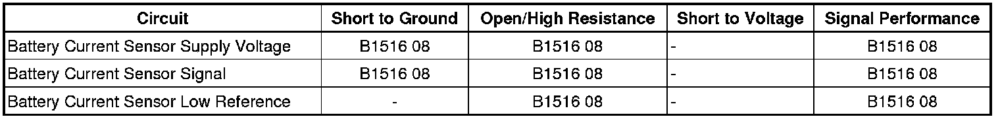

B1516
DTC B1516
Diagnostic Instructions
* Perform the Diagnostic System Check - Vehicle (Initial Inspection and Diagnostic Overview) prior to using this diagnostic procedure.
* Review Strategy Based Diagnosis (Initial Inspection and Diagnostic Overview) for an overview of the diagnostic approach.
* Diagnostic Procedure Instructions (Initial Inspection and Diagnostic Overview) provides an overview of each diagnostic category.
DTC Descriptors
DTC B1516 08
- Battery Current Sensor Signal Invalid
DTC B1516 66
- Battery Current Sensor Wrong Mounting Position
Diagnostic Fault Information

Circuit/System Description
The battery current sensor is a 3-wire hall effect current sensor. The battery current sensor monitors the battery current. It directly inputs to the body control module (BCM). It creates a 5 volt pulse width modulation (PWM) signal of 128 Hz with a duty cycle of 0-100 percent. Normal duty cycle is between 5-95 percent. Between 0-5 percent and 95-100 percent are for diagnostic purposes.
Conditions for Running the DTC
* The ignition is ON.
* The engine is running.
Conditions for Setting the DTC
B1516 08
The BCM detects a duty cycle of PWM input signal is less than 4 percent or more than 96 percent for more 33 seconds.
B1516 66
The BCM detects the battery current sensor is improperly installed.
Action Taken When the DTC Sets
The charge indicator illuminates in the instrument panel cluster (IPC) and the SERVICE BATTERY CHARGING SYSTEM warning message will be displayed in the driver information center (DIC) if equipped.
Conditions for Clearing the DTC
The DTC clears as current status when the battery sensed current returns to normal range for more than 5 seconds.
Reference Information
Schematic Reference
Starting and Charging Schematics ([1][2]Electrical Diagrams)
Connector End View Reference
Component Connector End Views (Connector Views)
Description and Operation
Charging System Description and Operation (Description and Operation)
Electrical Information Reference
* Circuit Testing (Component Tests and General Diagnostics)
* Connector Repairs (Component Tests and General Diagnostics)
* Testing for Intermittent Conditions and Poor Connections (Component Tests and General Diagnostics)
* Wiring Repairs (Component Tests and General Diagnostics)
Scan Tool Reference
Control Module References (Programming and Relearning) for scan tool information
Circuit/System Testing
B1516 08
1. Ignition OFF, disconnect the harness connector at the battery current sensor.
2. Ignition OFF, test for less than 1.0 ohm between the low reference circuit terminal B and ground.
• If greater than the specified range, test the low reference circuit terminal B for an open/high resistance. If the circuit tests normal, replace the BCM.
3. Ignition ON, test for 4.8-5.2 volts between the battery current sensor supply voltage circuit terminal A and ground.
• If less than the specified range , test the battery current sensor supply voltage circuit terminal A for a short to ground or an open/high resistance. If the circuit test normal, replace the BCM.
• If greater than the specified range , test the battery current sensor supply voltage circuit for a short to voltage. If the circuit tests normal, replace the BCM.
4. Ignition ON, test for 4.8-5.2 volts between the battery current sensor signal circuit terminal C and ground.
• If less than the specified range, test the battery current sensor signal circuit terminal C for a short to ground or an open/high resistance. If the circuit test normal, replace the BCM.
• If greater than the specified range, test the battery current sensor signal circuit terminal C for a short to voltage. If the circuit tests normal, replace the BCM.
5. If all circuits test normal test or replace the battery current sensor.
B1516 66
When diagnosing B1516 66 verify that the battery current sensor is installed securely and positioned in the correct current flow direction.
If the battery current sensor is not, remove and reinstall the sensor properly.
Repair Instructions
Perform the Diagnostic Repair Verification (Verification Tests) after completing the diagnostic procedure.
* Control Module References (Programming and Relearning) for BCM replacement, setup, and programming
* Battery Current Sensor Replacement (Service and Repair) for current sensor replacement